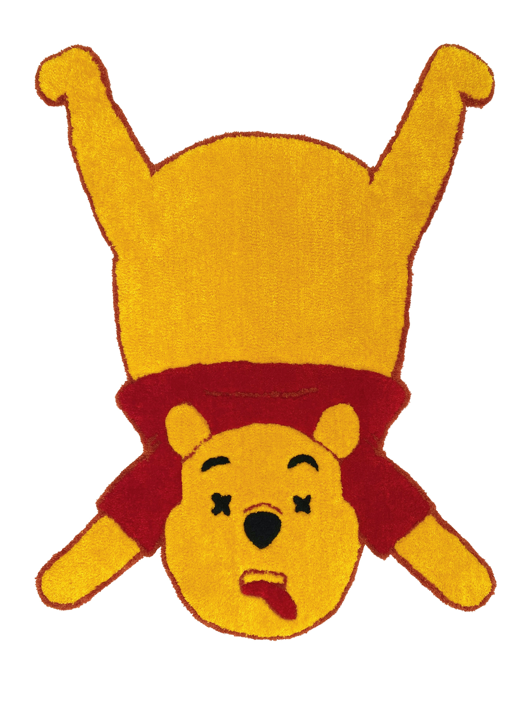
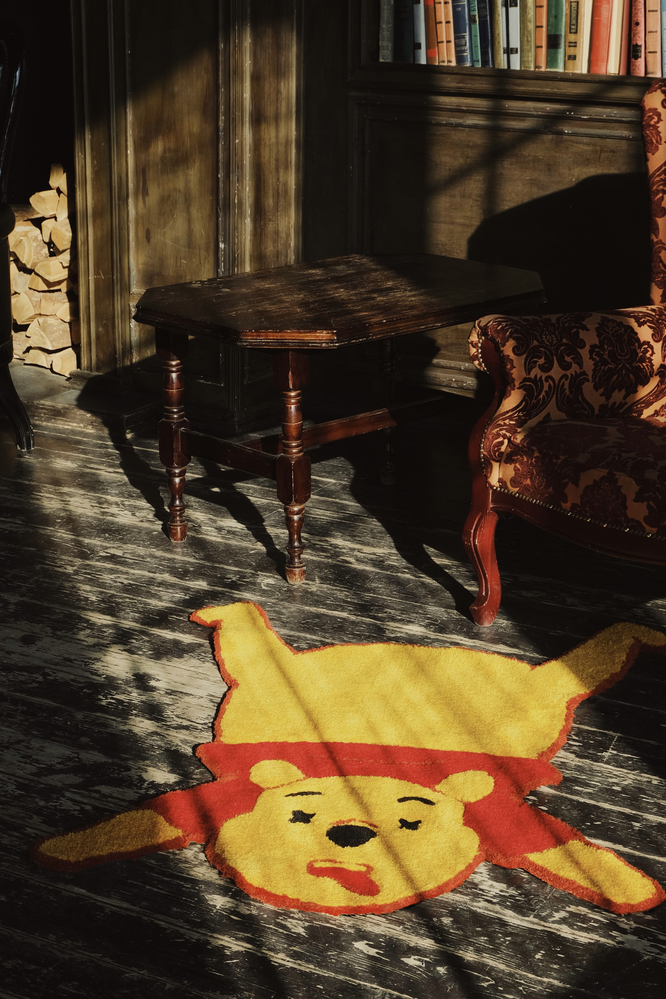
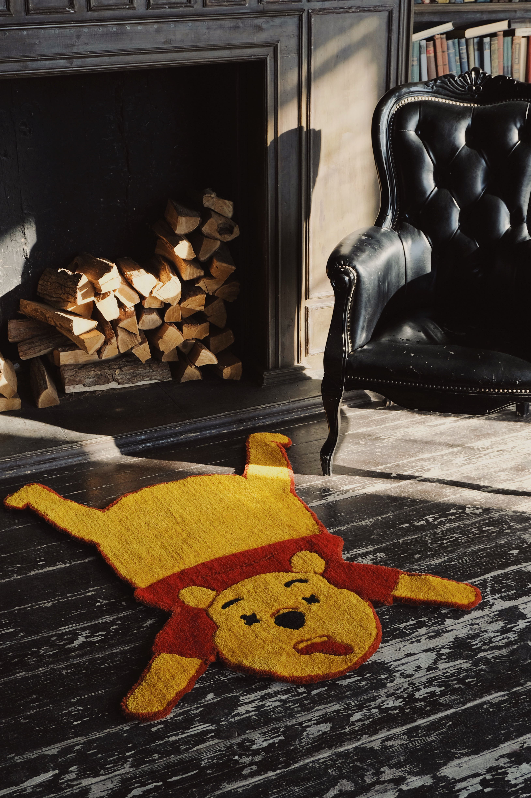

Disney давно перестал делать мультики, чтобы рассказывать детям про ценность любви и дружбы. сейчас с помощью «детского контента» Disney воспитывает новые поколения будущих потребителей своих товаров и услуг. из доброго медведя Винни Пух превратился во многомиллионную франшизу.

28 февраля 2023 года Disney ушел из России и забрал с собой весь контент. смерть диснеевского Винни Пуха означает не только конец Disney в России, но и конец идеи зарабатывать на детстве и детских воспоминаниях.

состав: 100% высококачественный акрил, 100% настоящая любовь

сказка
однажды, давным-давно в Чудесном лесу соткали волшебный ковер из самой мягкой ткани, какую только можно себе представить. все, вплоть до самых циничных зумеров, восхищались тем, насколько он плюшевый и необычный.
ходят слухи, что этот ковер сделан из самого дорогого медведя в мире. коврик из шкуры Винни Пуха вобрал в себя силу любви и дружбы, чтобы даже самые суровые дни стали немного мягче и теплее.